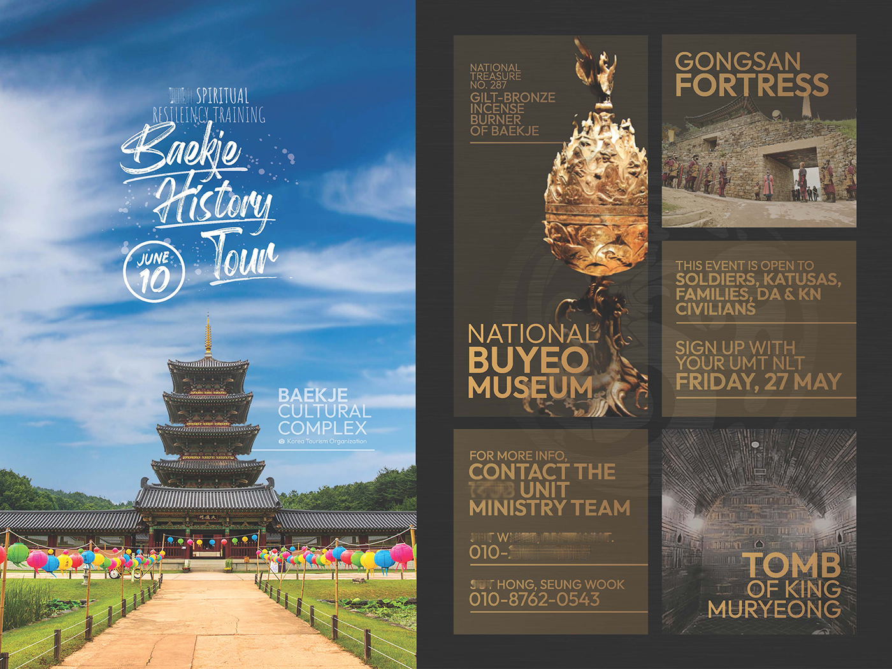
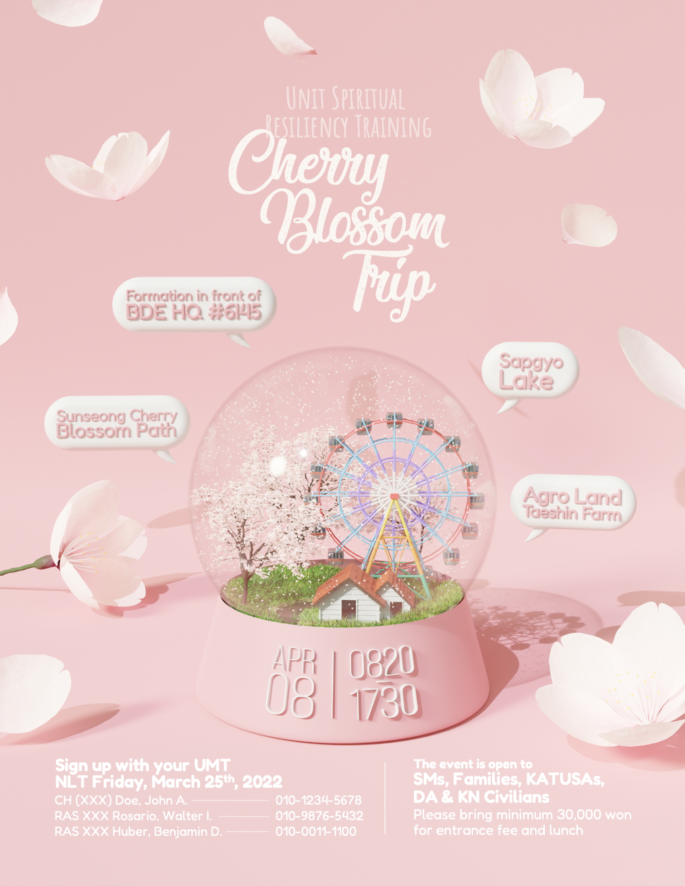

Designs for Cultural Exchange
Service as a KATUSA Sergeant at U.S. Army Camp Humphreys | Apr 2021 - Aug 2022
Tourist Site Image Credit | Korea Tourism Organization
My Mission
During my conscription, I served as a KATUSA (Korean Augmentation to the U.S. Army) soldier at a U.S. Army base. My role was to bridge the soldiers of the Republic of Korea and the U.S., strengthening combined defense capabilities and symbolizing the friendship and mutual support between the two nations.
My section organized various cultural exchange events to foster friendship between the two nations, provide refreshment for the soldiers, and help them recognize the impact of their service. My role was to manage these events from start to finish.
Challenge
“How can I further facilitate the cultural exchange events?”
Maximizing Participation
No matter how well-planned an event is, it holds little value without participants. To maximize engagement, one of my key goals was to increase participation through effective promotion. I designed visually striking flyers and strategically placed them throughout unit buildings while leveraging various media channels to spread the word.
As a result, participation reached an all-time high, with over 1,000 attendees across the 17 events I planned and managed. In recognition of this effort, I was honored with the Army Commendation Medal and the Army Achievement Medal.
Ensuring the Best Experience during the Event
Another goal was to ensure participants had the best possible experience during the event, leaving them feeling refreshed and motivated. To achieve this, I focused on enhancing event quality by creating various media, including guidebooks and pamphlets, to provide clear information on the event schedule, logistics, and recommended places to visit.
As a result, the events I organized received highly positive feedback, with the guidebooks and designs being recognized as top three strengths in the After Action Review (AAR) and achieving high satisfaction rates.


Tourist Site Image Credit | Korea Tourism Organization